The feel
Taopunk treats Taoist ritual as forgotten technology. Shihwei Yang, the producer of Nine Sols, noticed that talismans and the Hetu and Luoshu diagrams join lines and circles in patterns that look at first glance like the traces on a motherboard, and wondered whether they had once been technology that the world forgot.1 Red Candle Games, the Taiwan-based studio2 that coined the name,3 puts it plainly: cyberpunk clashes with Taoism, and sci-fi meets Eastern myth and fantasy.4 On screen that means hand-drawn worlds where Yi fights with martial arts, Taoist talismans and a godly bow.5
Every part of Nine Sols, from the lore and the world to the characters and the art, had to hold the balance between the two halves.5 The model came from Japan. The team grew up on 1980s and 1990s anime and games that blended Japanese tradition with futuristic settings, and Akira and Ghost in the Shell shaped the cyberpunk side of Nine Sols.2 For the rest, Red Candle drew on art, games, animation and comics, and dug deep into its own cultural heritage.6
- mythic
- ritual
- clinical
- hand-inked
- ancient-future
- eerie
Where it comes from
Red Candle Games was founded in Taiwan in 2015 and made its name with the horror games Detention (2017) and Devotion (2019).2 While it was planning its next game in the middle of the cyberpunk craze, a teammate asked why the world had so many punk genres and no "Taopunk" or "Empress Dowager punk".3 The story came from the myth of the archer Hou Yi, who shot down the suns when all ten rose at once,2 and from a question Yang had noted about 15 years earlier: what if Hou Yi had been an alien?3 Nine Sols came out in May 2024.4 The talismans it borrows are far older. Taoist talismans took shape in the Eastern Han dynasty, out of the tallies that ancient rulers used to call up troops or deliver orders.7
Core elements
Talisman strips
Taoist talismans are written in black or red ink on coloured paper,8 such as red or yellow.9 They may be written out by hand or stamped with a seal, and most show divinatory diagrams beside a highly stylised script understood as heavenly writing.9 Their characters are twisted until they look like drawings as much as calligraphy.7 In Nine Sols they are weapons: Yi slashes, deflects and charges into enemies, then blows them up with a Taoist talisman.4
Circuit-like diagrams
Talismans carry figures and formal symbols such as constellations, the five phases and the eight trigrams,8 and the trigrams themselves are eight sets of three lines, broken and unbroken, that stand for natural forces.10 Yang sees a motherboard's circuits in the joined lines and circles of talismans and of the Hetu and Luoshu.1
Old gods as alien rulers
The myths are retold as science fiction. Nine Sols turns the story of the archer Hou Yi into a science-fiction plot,2 its realm, New Kunlun, is a sanctuary built by an alien race, and most of its characters come from the ancient gods and monsters of the Shan Hai Jing.1
Chinese buildings and machinery
Traditional buildings share the frame with machines. Nine Sols takes one area's machinery from early Japanese animation and bases a ruin on Chinese gardens and Hakka round houses.11 S-GAME's kungfupunk sets mechanical prosthetics and crumbling industrial ruins beside traditional Chinese aesthetics.12
Dense 1980s anime line work
Red Candle set out to recreate 1980s and 1990s Japanese anime, with frames built from a great deal of line art, a bit like watching Akira.11 The game uses hand-drawn sprite animation and Japanese manga-style cutscenes,4 and Akira and Ghost in the Shell were key inspirations for its art.5
Muted colour and clinical tech
Colours stay muted and the detail understated. Clean, almost sterile areas sit beside gross ones, and grotesque enemy designs meet a cold, clinical high-tech look, with darkness pressing in at the edges of the screen.13
How to do it
Start from one myth
Pick one story and ask what it would be as science fiction. Nine Sols began with the archer Hou Yi and the ten suns that rose together.2 Yang had read that Chiyou had a bronze head and an iron brow, and wondered whether he was really a robot.1 Take the rest of the cast from the gods and monsters of the Shan Hai Jing.1
Base each area on a real place
Give every area its own reference. New Kunlun is invented, so the team could not scout locations as it had when it visited schools and old apartments for its earlier games.11 Its Taoist grotto is modelled on the Dunhuang caves, and the many human statues there became Solarians designed with cats as the model.11
Write the talismans
Build each glyph from real Chinese characters and change their shapes: the Dujiang talisman overlaps five characters into one.7 Twist the strokes like winding clouds.7 A simple talisman needs one or a few characters, while a complicated one mixes in many parts, such as star diagrams and divine images.7 Write in black or red ink on coloured paper, and add constellations, the five phases or the eight trigrams.8
Draw the trigrams
Make each trigram from three lines, solid for yang and broken for yin.14 There are eight of them.10 Stack two, one above the other, for one of the 64 hexagrams, and build it up from the bottom, line by line.14
Draw dense line art
Build frames from a great deal of line art, as 1980s and 1990s Japanese anime did; Red Candle wanted the effect of watching Akira.11 Keep the colour muted and the detail understated.13 Animate the sprites by hand and tell the story in manga-style cutscenes.4
Put a gong on the parry
Nine Sols plays a gong on every parry so players can hear its rhythm, and its composer got sample hit and parry sounds before writing, to keep the music out of their frequency bands.15 Brief each track with a keyword or two: the fight with Nüwa and Fuxi was "Peking opera disco house".15 Fuse traditional Eastern sounds with modern instruments.5
Cheat sheet
Do
- Fix the visual style early. In Nine Sols it was the first part settled, and the part the team could steer while the gameplay design struggled through its first year.11
- Brief character artists loosely. Yang asked only for what the old texts describe, such as a ring of grass on Shennong and snake imagery for Nüwa, and left every other detail to the lead artist.11
- Give each talisman a job. A talisman can stand for cosmic energy, for a god or for a deity's order, and its uses fall into four kinds: summoning, hearing, exorcism and subduing.8
- Study real talismans before inventing your own. Their characters are made according to set principles, and the order and positions of their parts are passed down from master to disciple within each Taoist sect.7
Avoid
- Bolting the two halves together. Red Candle found that the genres are worlds apart and cannot simply be forced together and still feel authentic.5
- Random squiggles for talisman script. Most talismans are made of real characters, transformed.7
- Treating talismans as a dead prop. At a mountain shrine in China, a Taoist priest wrote and sold them to long lines of devotees,9 and Tainan's Puji Temple prints its charm, said to date from 1911, on towels, reproduced down to the colour of the paper.16
- Art that buries the action. A reviewer found Nine Sols' artwork could get in the way when several enemies attacked at once.13
- Underestimating the line work. Dense hand-drawn line art across a big, interconnected map costs a great deal of effort.11
Tools and tutorials
- Nine Sols Digital Art Book
416 pages of core visual material from the development of Nine Sols.6
- FYSK Daoist Culture Centre: Talismans
How talismanic characters are put together, with worked examples such as the Dujiang talisman.7
Palette
Talisman yellow and cinnabar ink come from a printed Daoist talisman, robe ochre from Yi’s own swatch in the Nine Sols art book, mountain red, circuit green and hologram cyan from the Nine Sols key art, and jade and night navy from the guardian hall.
Feel the vibe
Listen
The hero's theme, and the place to start with the game's score.
YouTubeThe game's theme song, to play while you look over the key art at the top of the page.
YouTubeA boss theme for the dreamlike, pink-lit side of the style.
YouTubeAn old-sounding chant over a cyberpunk city, the same pull between old and new that this page is about.
YouTube
More references
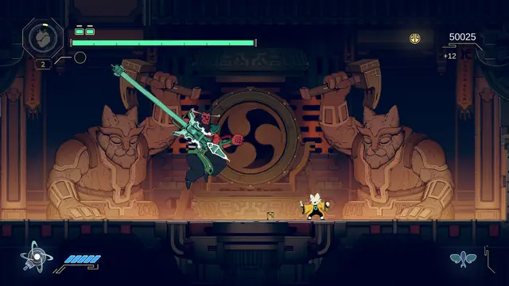
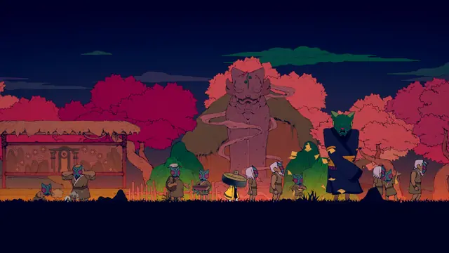
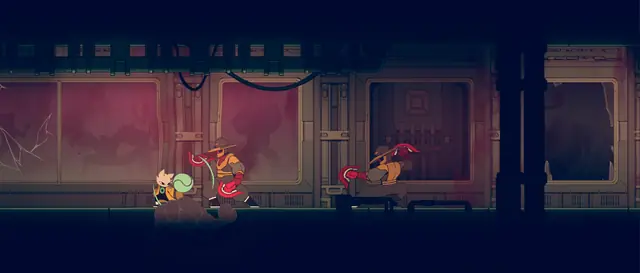
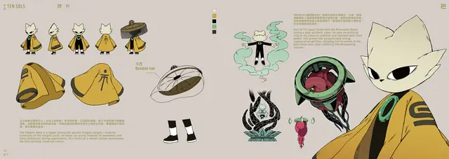
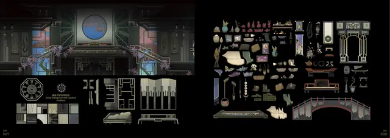
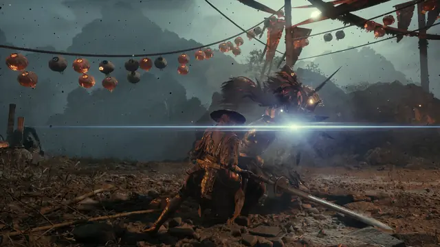
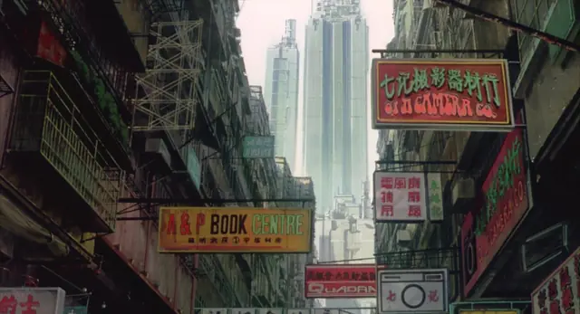
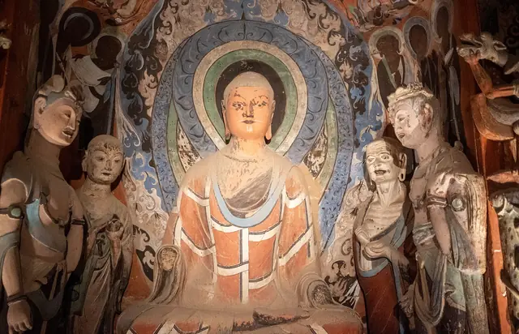
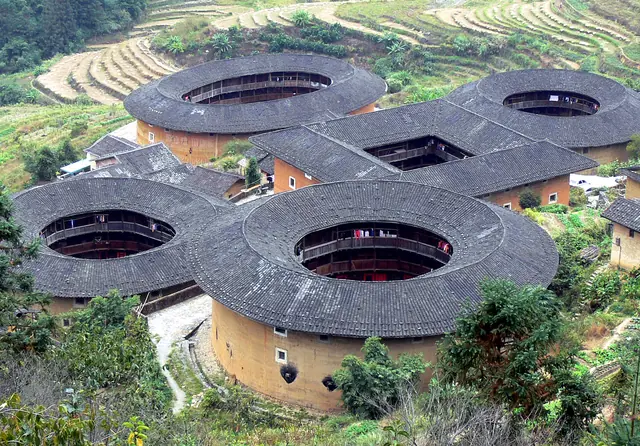
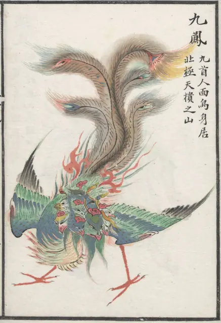
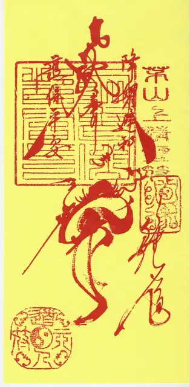
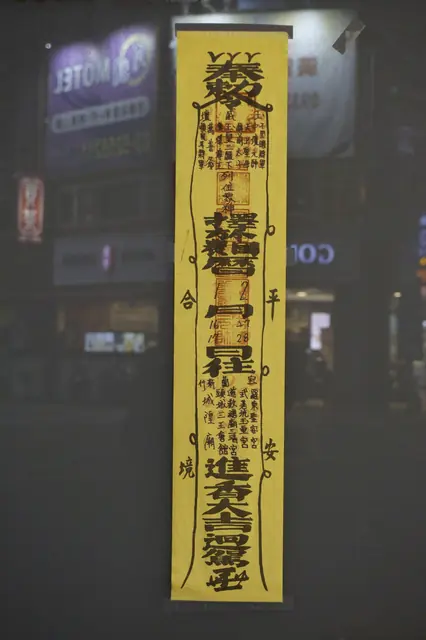
Games
- Nine Sols
The game that named the style.3 Study how each area starts from its own reference, from early anime machinery to the Dunhuang caves, and how it carries dense line art across a large, interconnected map.11
- Phantom Blade Zero
S-GAME calls its blend kungfupunk: martial arts, mechanical prosthetics and industrial ruins with traditional Chinese aesthetics.12 Study the 3D take on the same mix.
Film, art and more
- Akira
Red Candle wanted frames built from many lines, a bit like watching Akira.11
- Ghost in the Shell
With Akira, a key inspiration for the art of Nine Sols.5
- Shan Hai Jing (Classic of Mountains and Seas)
The ancient gods and monsters behind most of the characters in Nine Sols.1
- Mogao Caves, Dunhuang
Buddhist cave temples near Dunhuang, famous for their statues and wall paintings.17 Their many human statues became the cat-like Solarians of Nine Sols' Taoist grotto.11
- Fujian Tulou
Earthen clan houses in Fujian, built round or square around a central courtyard.18 Nine Sols' Yaochi ruins draw on Hakka round houses.11
- Puji Temple Hundred-Year-Old Charm of Peace and Tranquility
Said to have been written in 1911 by a spirit medium for Tainan's Puji Temple, and still reproduced down to the colour of its paper.16
Sources
- 1【赤燭再進化4】打造「道龐克」超古文明世界觀 日式動漫推進劇情更流暢 (Red Candle evolves, part 4: building the Taopunk world of a super-ancient civilisation)
- 2You know cyberpunk. Now let Nine Sols introduce you to ‘Taopunk’
- 3Nine Sols Ventures into New Territory - Red Candle Games Stylized Taopunk Action Platformer Aims for Global Market
- 4Nine Sols on Steam
- 5Nine Sols: How We Brought a Taopunk World to Life
- 6Nine Sols Digital Art Book on Steam
- 7Talismans
- 8Talismans and Symbols
- 9Signs of Power: Talismanic Writing in Chinese Buddhism
- 10Bagua
- 11【赤燭再進化番外篇】重現早期日式動漫畫風 客家圓樓、敦煌石窟融入「道龐克」世界 (Red Candle evolves, extra: recreating early Japanese anime, with Hakka round houses and the Dunhuang caves in a Taopunk world)
- 12Phantom Blade Zero on Steam
- 13Nine Sols review
- 14Yijing
- 15【赤燭再進化番外篇】打造沉浸聽覺體驗 《九日》音樂與原創「太陽語」揭祕 (Red Candle evolves, extra: the music of Nine Sols and its invented Solarian language)
- 16Popular talisman towels sell out at temple in Tainan
- 17Mogao Caves
- 18Fujian Tulou